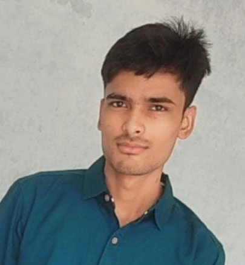

Afzal personal page
Afzal Hussain

I am Afzal Hussain, I am from Mohanpur(UP) ,I am writing CS102 exam right now.My hobbies are playing video
games (specially fps),
watching sci fi action moives or TV show, learning new things etc.
Education
| Year of graduation |
Degree |
Institution |
| 2025 |
B.Tech |
IIT goa |
| 2021 |
12th standard |
Scholar's Academy |
| 2019 |
10th standard |
Scholar's Academy |
1st-year Cources @IIT Goa
Autumn semester
- CS101:Introduction to computing by Dr.clint P. George
- Ph101:Quantum Physics and Application by DR.Santosh kumar das
- Mth101:Calculus by Dr. sandeep
- CH101:Physical Chemistry by Dr. Mantu santra
- CH102:Inorganic and Organic Chemistry by Dr.Raja mitra and Dr. Rishikesh narayan
- HS101:Foundation Programme in Humanities and Social
Sciences by Sahiba Hashami
- CH104:Chemistry Lab II by E siva
- NO101:National Sports Organization by Santosh
Spring semester
- MTH1021:Basic Linear Algebra by Dr. Kalpesh haria
- PH102:Electricity and Magnetism by Dr.Vaibhav wasnik
- Ph104:Physics Lab by Dr. Sudipta kunungu
- EE101:Introduction to Electrical and Electronics Engineering by DR. Sheron
- BIO101:Introductory Biology
- CS102:Software tools by Dr. Clint P. George
- ME102:Engineering Graphics and Introduction to Computer Aided-Drawing
- NO102:National Sports Organization
| Hobbies |
| Playing online or outdoor games |
| Learning about machind and computers |
| Reading comic or novel |
| Watching movies |